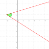

angle
operation

Source: Wikipedia
Wikipedia Page (Something wrong with this association? Let us know.)
Wikidata Page (Something wrong with this association? Let us know.)
Occurs in:
- benzene_molecule_bond-c-c-c__angle
- earth_interior_earthquake_p-seismic-wave_takeoff__angle
- earth_interior_earthquake_s-seismic-wave_takeoff__angle
- model_grid_axis~x_axis~east__angle
- sea_shoreline_axis~x_axis~east__angle
- sea_surface_water_wave_refraction__angle
- sea_surface_water_wave_crest_x-section_vertex__angle
- earth_interior_earthquake_p-seismic-wave_takeoff__angle
- earth_interior_earthquake_s-seismic-wave_takeoff__angle
- earth_interior_p-seismic-wave_takeoff__angle
- earth_interior_s-seismic-wave_takeoff__angle
- earth-mantle_material_mohr-coulomb-plastic_dilation__angle